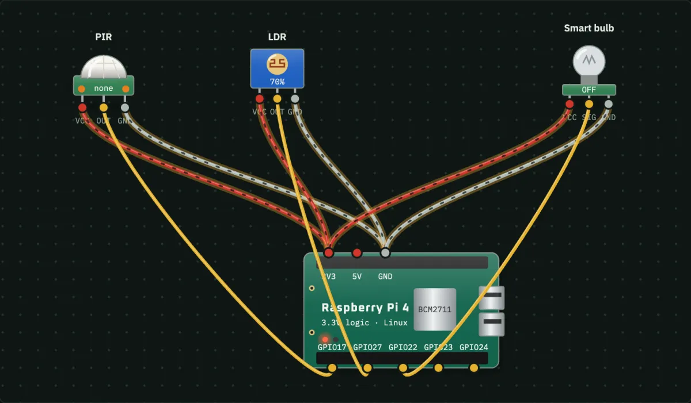

Smart Dustbin using Arduino, Ultrasonic Sensor and Servo
The lid opens by itself when a hand comes within 20 cm and closes again when the hand moves away. It is one of the most popular school and college science-fair projects because it is cheap, easy to wire and fun to show.
▶ Try this circuit free in the simulator
Components required
| Part | What it does | Qty | Approx. price |
|---|---|---|---|
| Arduino Uno R3 | ATmega328P microcontroller board | 1 | ₹450 |
| Ultrasonic HC-SR04 | Sends a 40 kHz ping and times the echo | 1 | ₹60 |
| Servo SG90 | Motor, gearbox and position feedback in one | 1 | ₹120 |
| Total (plus jumper wires and a breadboard) | ₹630 | ||
Circuit connections
| From | Pin | To | Pin |
|---|---|---|---|
| Ultrasonic HC-SR04 | VCC | Arduino Uno R3 | 5V |
| Ultrasonic HC-SR04 | GND | Arduino Uno R3 | GND |
| Ultrasonic HC-SR04 | OUT | Arduino Uno R3 | D2 |
| Servo SG90 | VCC | Arduino Uno R3 | 5V |
| Servo SG90 | GND | Arduino Uno R3 | GND |
| Servo SG90 | SIG | Arduino Uno R3 | D3 |
How it works
- The HC-SR04 ultrasonic sensor sends a sound pulse and times the echo to measure distance in centimetres.
- The Arduino reads that distance on pin D2 about 20 times a second.
- If the distance is below 20 cm, the Arduino turns the SG90 servo on pin D3 to 90°, which lifts the lid.
- When the hand moves away, the servo goes back to 0° and the lid closes.
The logic in one line: IF D2 < 20 → D3 = 90 (else 0).
Arduino code
// Circuit Arena — Smart Dustbin
// Board: Arduino Uno R3
// Wiring:
// Ultrasonic VCC -> Uno 5V
// Ultrasonic GND -> Uno GND
// Ultrasonic OUT -> Uno D2
// Servo VCC -> Uno 5V
// Servo GND -> Uno GND
// Servo SIG -> Uno D3
#include <Servo.h>
Servo servo_D3;
float v_D2 = 0; // Ultrasonic
// HC-SR04 with TRIG and ECHO on one pin. With separate pins, pass trigPin and echoPin.
long readUltrasonicCm(int pin) {
pinMode(pin, OUTPUT); digitalWrite(pin, LOW); delayMicroseconds(2);
digitalWrite(pin, HIGH); delayMicroseconds(10); digitalWrite(pin, LOW);
pinMode(pin, INPUT);
return pulseIn(pin, HIGH, 30000) / 58; // 58 µs per cm, there and back
}
void writeOut(int pin, float value) {
if (value > 1) analogWrite(pin, constrain(value, 0, 255)); // PWM on D3, D5, D6, D9, D10, D11
else digitalWrite(pin, value > 0 ? HIGH : LOW);
}
void setup() {
Serial.begin(9600);
servo_D3.attach(3);
}
void loop() {
// 1. Read the sensors
v_D2 = readUltrasonicCm(2); // cm
Serial.println(String("D2=") + v_D2);
// 2. Apply the rules
if (v_D2 < 20) {
servo_D3.write(constrain(90, 0, 180));
} else {
servo_D3.write(constrain(0, 0, 180));
}
delay(50);
}Tips for building the real thing
- On a real bin the sensor faces forward and the servo sits at the hinge.
- Glue the sensor on the front of the bin, facing forward, and the servo at the lid hinge.
- Power the servo from a separate 5 V supply if the Arduino resets when the lid moves.
- Change 20 to 30 in the code if you want the lid to open from further away.
Try it in the simulator: Bring the distance below 20 cm and the lid opens. Open it now →
The simulator checks it for you: 10 cm → lid open, 60 cm → lid closed.
FAQ
Which sensor is used in a smart dustbin?
An HC-SR04 ultrasonic distance sensor. It measures 2 cm to 400 cm and costs about ₹60–100.
Can I make it without Arduino?
You need some controller to turn distance into a servo angle. A cheaper option is an IR obstacle sensor with a 555 timer and a relay, but the Arduino version is easier to change.
Why does my servo shake?
Usually the power is too weak. Give the servo its own 5 V supply and join the grounds.
More projects


